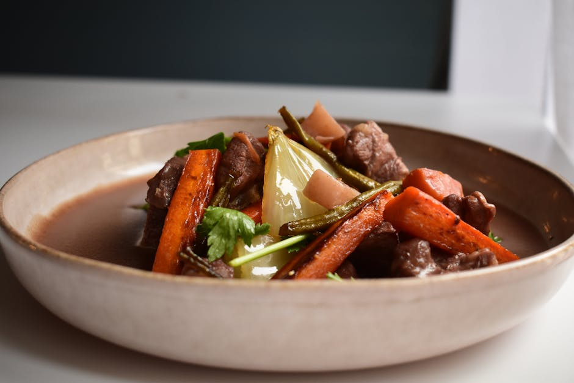

Egg noodles and sautéed venison in a rich sour cream and mushroom sauce.
1 lb venison loin, 8 oz mushrooms, 1 cup sour cream, 1 cup egg noodles, 1 onion, 2 cloves garlic, beef broth, butter, flour, salt, pepper, paprika
Slice venison thin, salt and pepper. Brown quickly in butter, set aside. Sauté mushrooms and onion, add garlic, sprinkle with flour and paprika, stir 2 minutes. Add broth, simmer, return meat, stir in sour cream off heat. Serve over egg noodles.
Never boil sour cream — it will curdle. Add it off the heat and stir gently.
🔥 Tag Soup — Wild Game & Outdoor Cooking
← Back to Tag Soup